Thai and imported beans, Japanese matcha, oolong from Fujian. Made one cup at a time.
Open 9:30 to 18:00. Closed on Thursdays. 5.0 on Google from 188 reviews (Nov 2026).
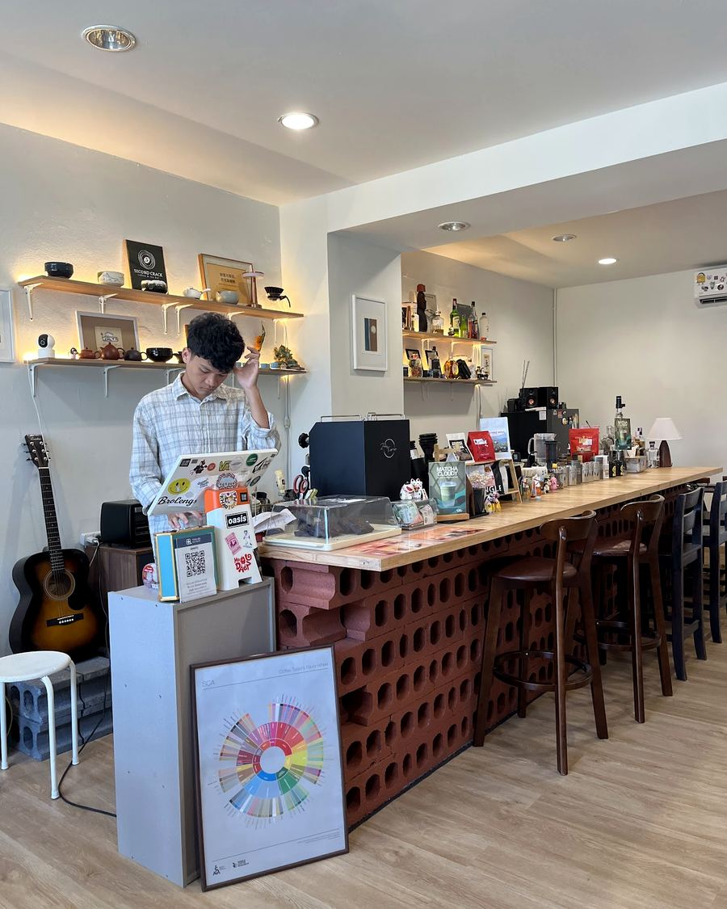
Notes in our own words, as on the menu. Ask us and we'll help you pick.
Six drinks from our recommend list.
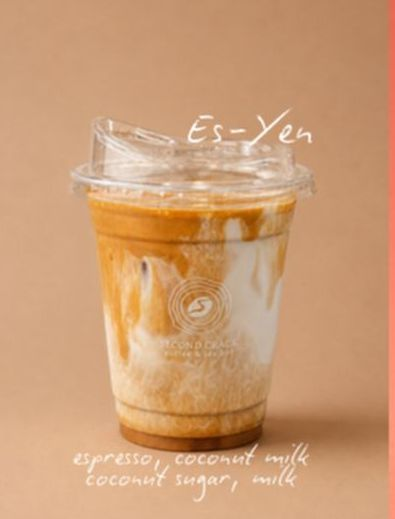
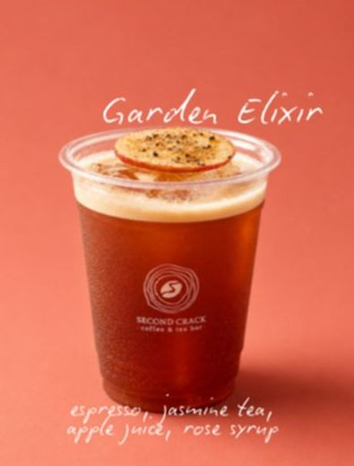
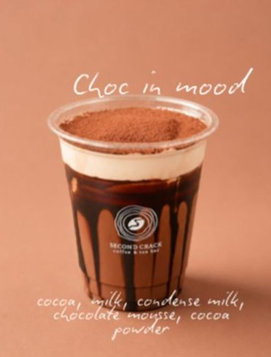
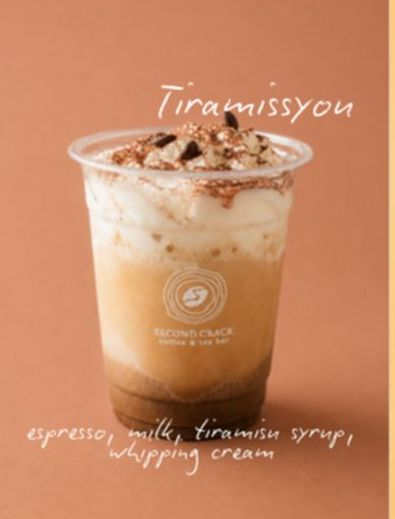
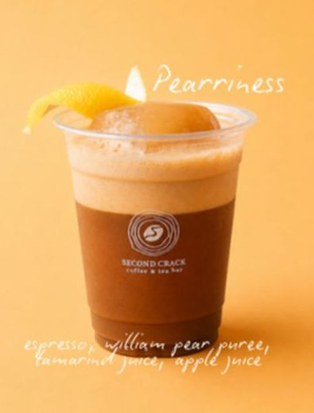
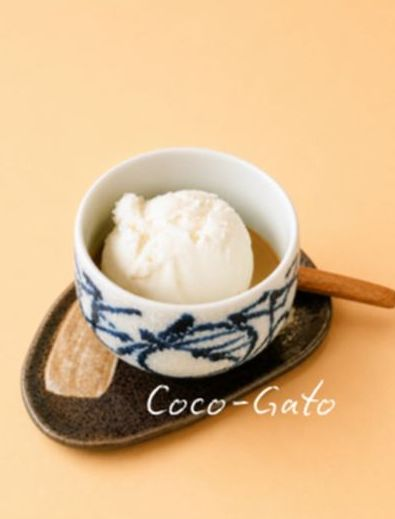
120 baht each
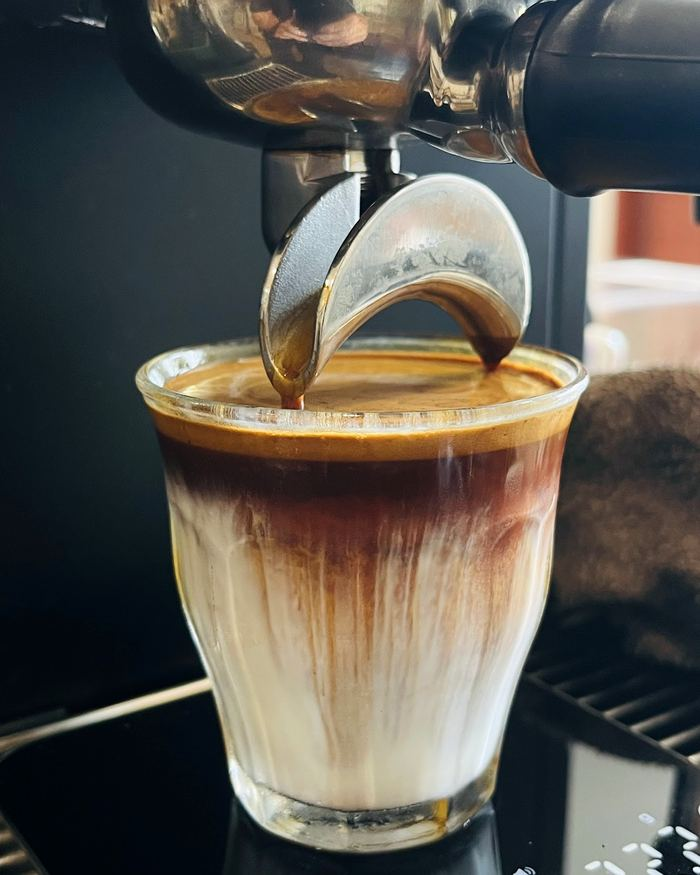
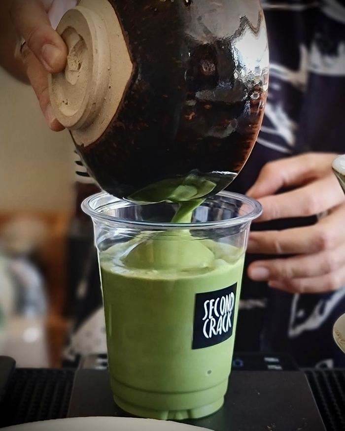
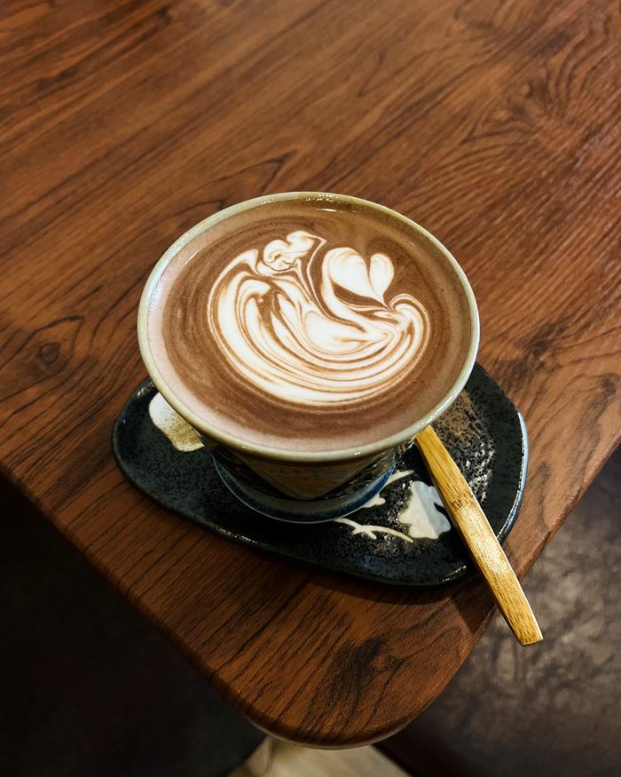
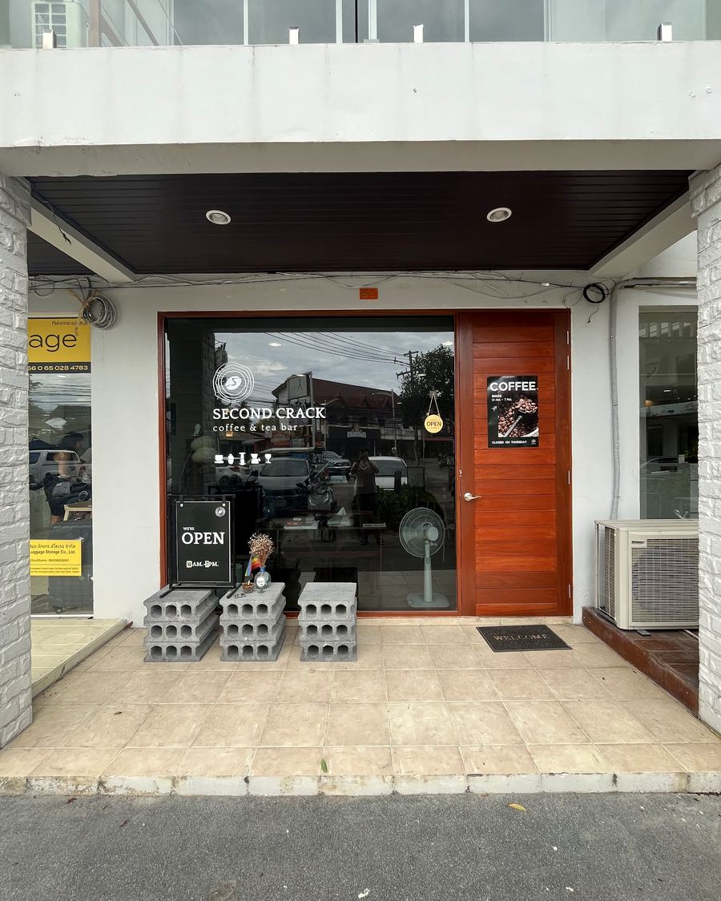
Coffee by day, and a highball or a coffee cocktail if you like.
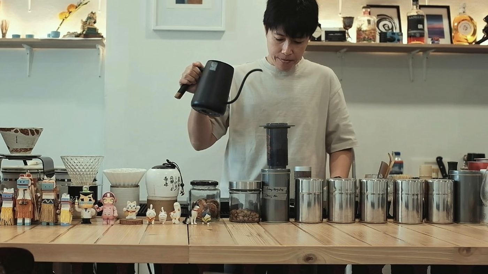
A quiet spot to sit with a laptop. Free parking, and cards or phone payments are fine.